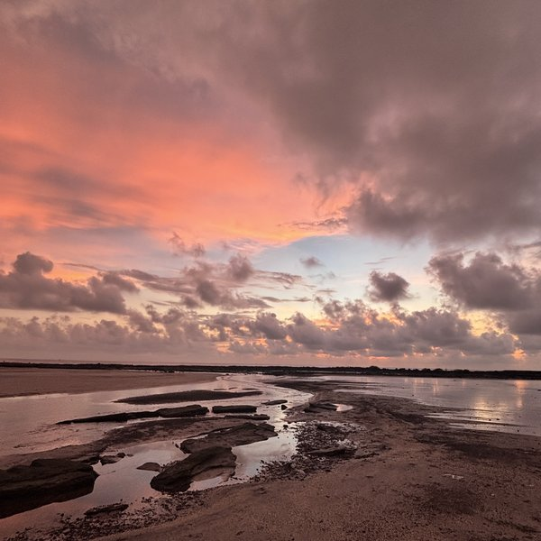
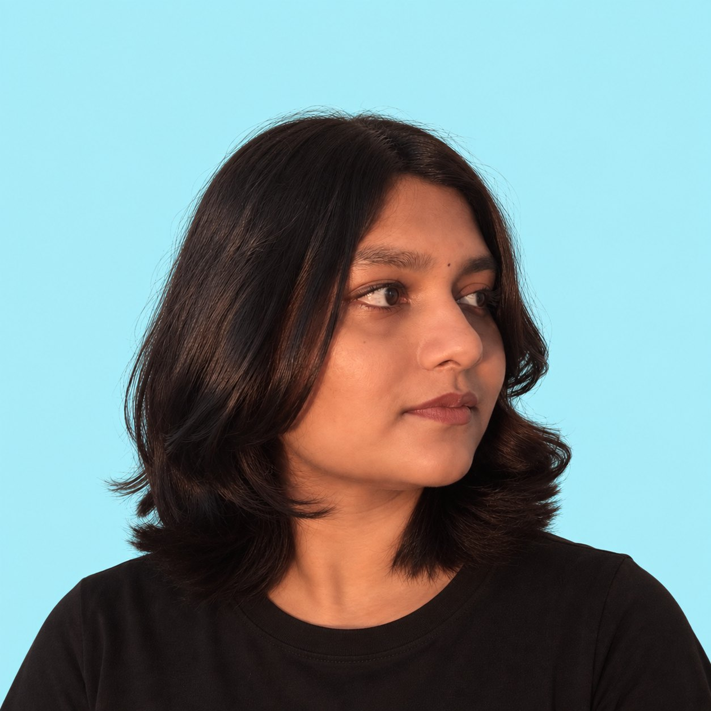
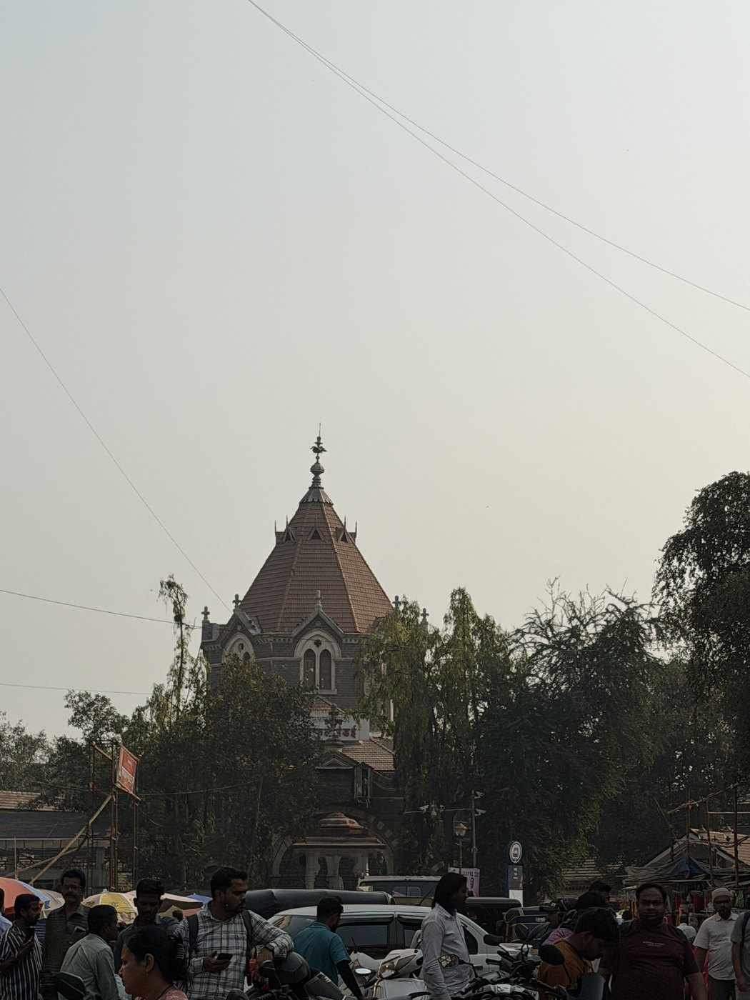
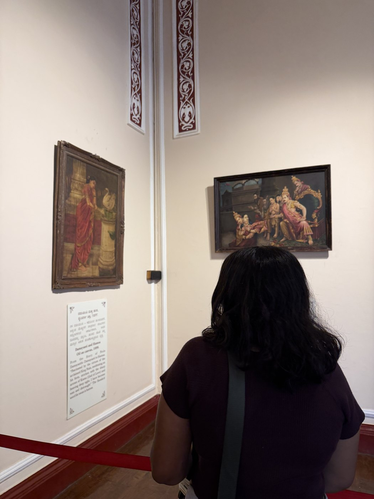
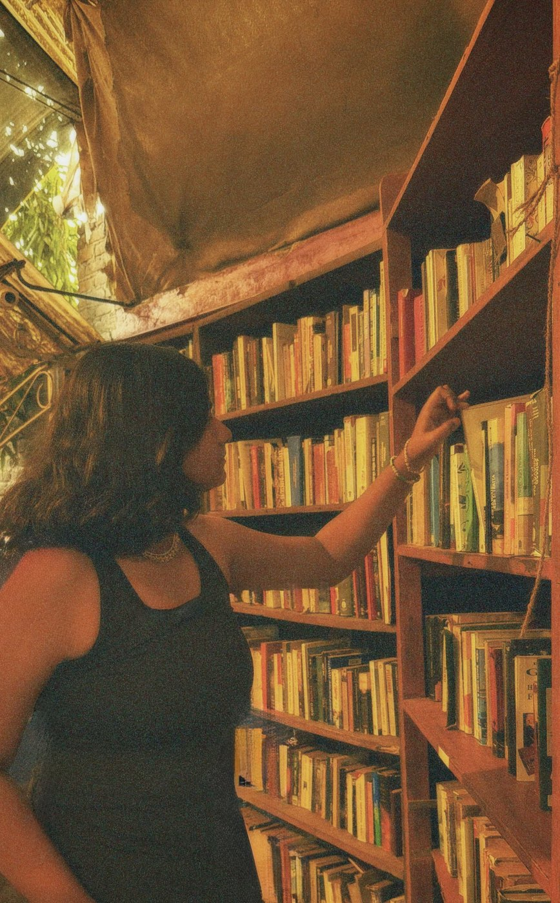
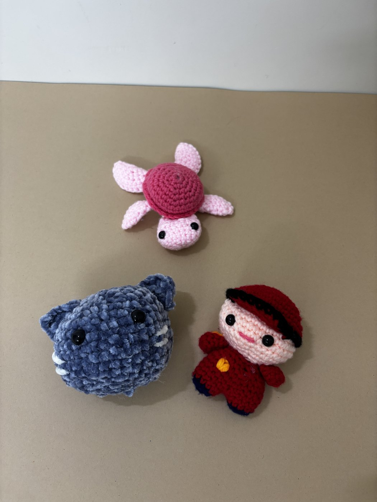
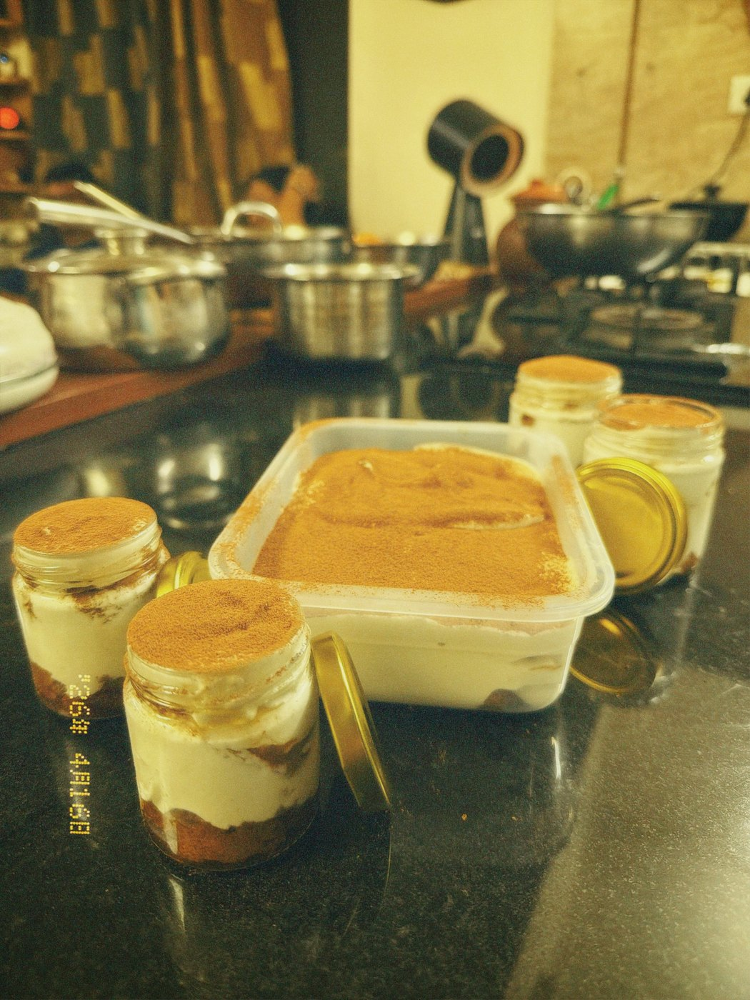
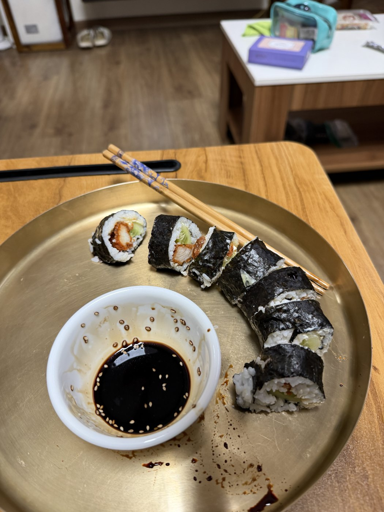
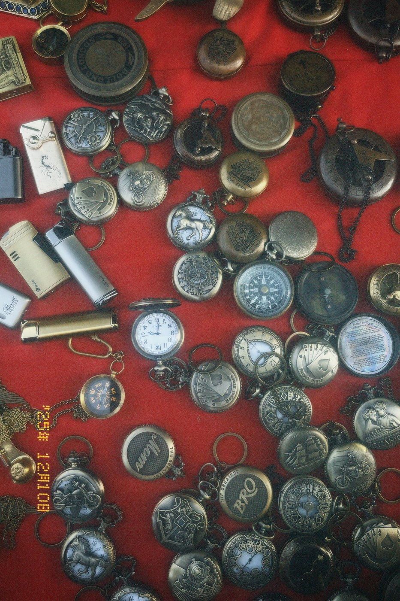
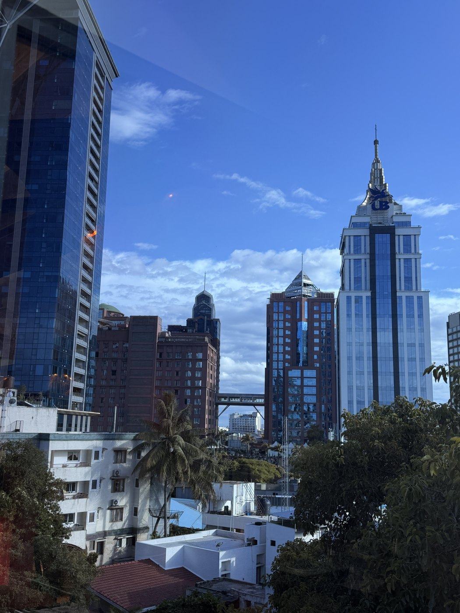

About Me / Beyond The Screens
Hi, it’s me again.
I’m Anoushka, a product designer and UX architect from Pune. Design is how I organize curiosity; the rest of my life is where I keep finding it.
I’m Anoushka, a product designer and UX architect from Pune. Design is how I organize curiosity; the rest of my life is where I keep finding it.

Life outside the screens.
“Question everything. Design with intent.”
Restless explorer. Research-driven questioner. Creating thoughtful digital experiences.
My doodles, plus anything you draw in Procreate.
The short version is on the iPad. This is everything around it.
I grew up in Pune, in a house where curiosity was never treated as a nuisance. I was the kid who took things apart to see how they worked, then spent twice as long putting them back together.
That has not really changed. I still want to know why something is built the way it is, and whether it could be kinder, clearer or more useful.


I study User Experience Design at MIT ADT's Institute of Design, where I learned that the first idea is rarely the right one. Research, interviews, maps and a lot of rewriting usually get me closer.
Outside studio hours you will find me in museums, reading everything from service design to behavioural science, and filling notebooks with questions I have not answered yet.


In 2023 I started Emrys Craft, making fantasy core jewellery by hand from metal and wire. Armour cuffs, charms and necklaces that look like they belong to another world.
Running it taught me the parts design school does not: pricing, photographing your own work, talking to people at exhibitions and learning what they actually want.


When I am not designing I am usually making something else. Crochet when I need to think, baking when I need a break, and cooking when I want to feed everyone around me.
It is all the same instinct really: start with raw material, follow a method, and see what it becomes.



I travel to collect details: a market stall of pocket watches, a street that smells like rain, the way a sign is set in a language I cannot read yet.
Those details end up in my work more often than any trend does. I am restless, I ask too many questions, and I am always exploring something new.

